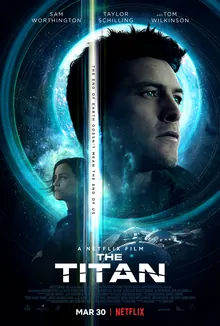

The genetics
The film is about forced evolution through genetic engineering. Collingwood's project modifies human volunteers with animal DNA to create a new species able to survive on Titan, and the changes to their skin, blood, eyes, senses and behaviour drive the story. Collingwood is a scientist who believes the end justifies the means: he hides the deaths of earlier subjects, admits he does not know what the survivors will become and is criticised by NASA for experimenting without evidence or ethical grounds. Abigail, a medical researcher, and another scientist who disagrees with his methods represent a more ethical science and continue the work at a new facility. The film thus combines a warning about unethical human experimentation with a final image that celebrates the transformation. Its science is pure speculation: real gene therapy changes genes in some of a patient's cells to treat diseases, and no known genetic technique could rebuild an adult human body for an alien world.
How genetics is portrayed
- Overall portrayal of genetics
- mixed The film warns against unethical forced evolution through its villainous project leader, but rewards the ethical scientists who continue the same programme and ends by celebrating Rick's successful adaptation, so it weighs the science's promise against its abuse.
- Outcome of the genetic intervention
- mixed The modifications kill several volunteers, drive two to murder their spouses and turn Rick into a mute, violent creature, but the final image shows him thriving on Titan as the transformation intended.
- Professor Martin Collingwood
- villain Aim: benevolent, curiosity (positive). He leads a state-backed programme, overseen by NASA and guarded by military police, to infuse volunteers with animal DNA so humanity can colonise Titan; the film accepts the goal but condemns his ends-justify-the-means methods: he hides earlier deaths, admits he does not know what the subjects will become, is chastised by NASA, orders fire on unarmed people and is arrested for treachery.
- Dr. Abigail Janssen and Dr. Freya Upton
- hero Aim: benevolent (positive). The medical researcher investigates the subjects' blood, exposes Collingwood's secret, saves Rick from a memory-erasing injection and, with Collingwood's dissenting assistant Freya, continues the Titan work at a new facility 'using more ethical methods'; they are the film's moral centre.
The story
In 2048, with Earth overpopulated and torn by conflict, Professor Martin Collingwood leads a programme to prepare humans to live on Saturn's moon Titan. Rick Janssen, an Air Force pilot, is one of fourteen volunteers whose bodies are modified to tolerate its cold, methane-rich environment, and he moves to the research site with his wife Abigail, a medical researcher, and their son. At first the results are promising: Rick can swim at great speed and hold his breath for long periods. Then the subjects begin to lose hair and skin, some die and another kills his wife. Abigail discovers that the volunteers' DNA has been infused with animal DNA to create a new species, Homo titaniens, and that Collingwood does not know what they will become. Rick loses his ability to speak and becomes violent. Abigail saves him from a memory-erasing treatment and helps him escape, Collingwood is arrested, and Rick eventually reaches Titan.